Проверяет staged diff
Команда custodes check смотрит только файлы, добавленные через git add, и ищет совпадения в новых строках.
pre-commit secret scanner
CLI-страж для Git-коммитов. Проверяет staged changes до коммита и останавливает API keys, tokens, passwords и любые запрещенные строки из конфигурации.

$ git add config.py
$ custodes check
Commit blocked by Custodes.
Secret-like value found in staged diff.Custodes не пытается заменить полноценный audit pipeline. Он ловит очевидные секреты там, где цена ошибки самая низкая: до того, как изменения попали в историю.
Команда custodes check смотрит только файлы, добавленные через git add, и ищет совпадения в новых строках.
При найденном секрете CLI завершает проверку с ошибкой, а pre-commit hook не дает коммиту пройти дальше.
Можно задать banwords, включить ASCII-логотип и выбрать язык сообщений для локальной команды.
Утилита держится рядом с Git и остается понятной: установил hook, добавил правила, проверил индекс.
installer.sh готовит рабочую директорию и команду custodes в локальном окружении.
custodes init добавляет pre-commit hook в текущий Git-репозиторий.
custodes check запускает Python-сканер по staged files и правилам проекта.
Если секретов нет, Git продолжает коммит. Если есть, Custodes показывает причину остановки.
Пока проект допиливается, секция работает как аккуратная заготовка под релизы, команду установки и changelog.
Когда появится первый стабильный релиз, сюда можно поставить прямую ссылку на GitHub Releases, checksum и короткую команду установки.
git clone https://github.com/No1se-pi/Custodes.git
cd Custodes
bash installer.sh
custodes initСейчас самая полезная поддержка для pet-проекта: звезда, issue с фидбеком и проверка на реальном репозитории.
Разметка уже готова: останется заменить disabled-ссылку на Boosty, GitHub Sponsors или другой способ поддержки.